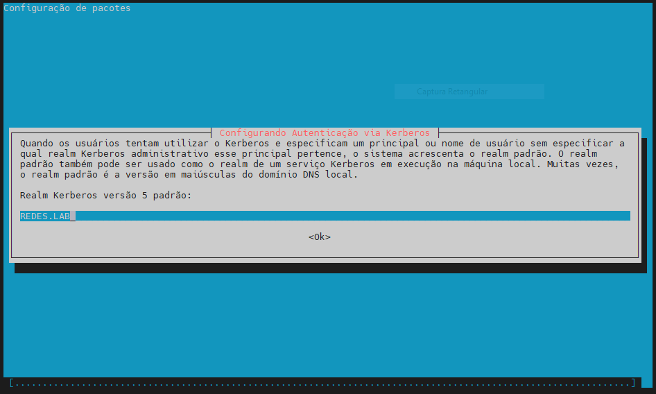
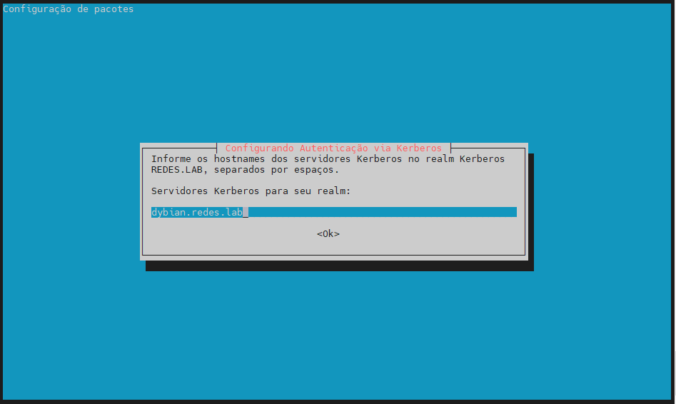

Pacotes
Para transformar seu servidor em um Controlador de Domínio Active Directory, instale o Samba e todos os pacotes necessários em sua máquina com privilégios de root em um console.
Pacotes:
- samba
- krb5-user
- krb5-config
- winbind
- libpam-winbind
- libnss-winbind
Comando:
apt install -y samba krb5-user krb5-config winbind libpam-winbind libnss-winbind
Enquanto a instalação estiver em execução, uma série de perguntas serão feitas pelo instalador para configurar o controlador de domínio.
Na primeira tela, você precisará adicionar um nome para o reino padrão do Kerberos (Kerberos REALM) em letras maiúsculas. Digite o nome que você usará para o seu domínio em letras maiúsculas e pressione Enter para continuar.

Em seguida, digite o nome do host do servidor Kerberos para seu domínio. Use o mesmo nome do seu domínio, desta vez com letras minúsculas e pressione Enter para continuar.

Por fim, especifique o nome do host para o servidor administrativo de seu domínio Kerberos . Use o mesmo que seu domínio e pressione Enter para finalizar a instalação.